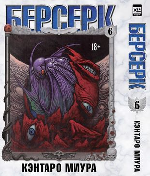

«Читай-город» — российская федеральная сеть книжных магазинов. Самая крупная книготорговая сеть в России.
А ещё это – крупный интернет-магазин книг. В нём вы можете заказывать книги в любое время 24 часа в сутки.
А ещё это – крупный интернет-магазин книг. В нём вы можете заказывать книги в любое время 24 часа в сутки.
Под покровом ночи Гатс и Каска, сопровождаемые лучшими воинами Отряда Соколов, проникают в темницу Уиндема, чтобы освободить томящегося там Гриффита. Узнав о случившемся, король Мидленда повелевает отправить в погоню за беглецами рыцарский орден Черных Псов, возглавляемый беспринципным психопатом Уайльдом. В развернувшейся ожесточенной схватке Гатс едва не лишается жизни, чудом сумев уцелеть. Но давшаяся таким тяжким трудом победа, как оказалось, в конечном счете лишена всякого смысла, ведь изможденных и павших духом людей ждет новое испытание, в ходе которого некогда амбициозный лидер Отряда Соколов будет вынужден принять судьбоносное решение и принести в жертву тех, кто прежде с фанатичной преданностью следовал за его мечтой....
Цена: 1539 рублей
Описание книги 2. Цена: